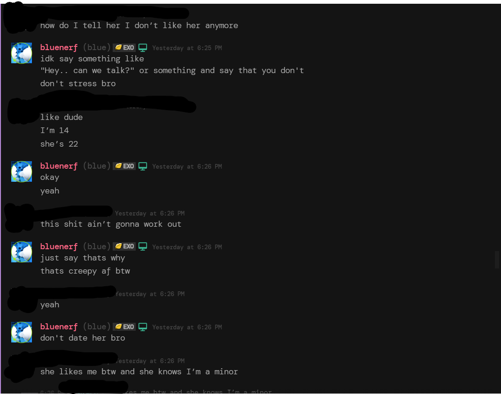

Hello, i have came here today to talk about a predator called Qxy, Qxy is currently staff in the SonicElijahMania discord server.
Timeline of Events
Date of first contact: [Insert approximate date, e.g., MM/YYYY]
Key incidents: [Brief bullet points describing sequence, e.g., "Initial messages started innocently but escalated to emotional pressure."]
Breakup attempt: [Details on manipulation, with references to images]
This timeline is based on provided evidence and aims to highlight patterns of behavior.
What did Qxy do?
Qxy had been messaging a minor, someone under 15, and they emotionally maniuplated the minor into feeling bad about breaking up, worried that she might kill herself if he breaks up with her.

Beginning of the messages, the victim wanting to break up, and also them stating their age.Screenshot of emotional threatsMore proof that the victim was getting groomed.Them fully blocking and removing Qxy.
Resources for Support and Reporting
If this happens to anyone you know:
Report to Discord: Use the in-app report feature for server staff violations.
Hotlines: Contact organizations like the National Center for Missing & Exploited Children (NCMEC) at cybertipline.org for online exploitation reports.
Mental health support: Resources like the National Suicide Prevention Lifeline (988 in the US) for anyone affected.
And to Qxy.
Please get help Qxy, you are not in the right state of mind, you are 22 and should have no reason dating someone under 15. Please visit a mental health professional.